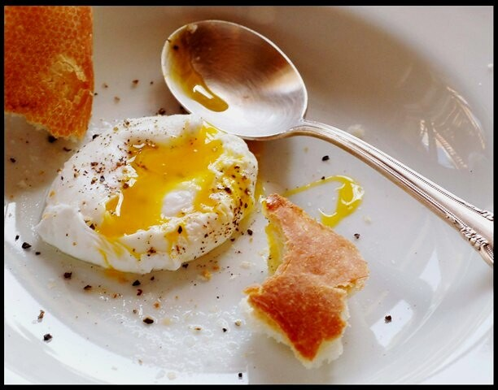

1.It may cause severe water loss or dehydration, which can be fatal for your health. People with this illness should include fluids in their diet. You can drink water, other kinds of fluids or even add foods with high water content.
2.Dairy products
Include more dairy products in your diet to overcome the ill-effects of this ailment.
3.Eat more semi-solid foods because they are easy to digest.Also, eat foods that are rich in carbohydrates.Food items such as
poached eggs and baked or roasted potatoes are some good options.

4.Eat foods rich in omega-3 fatty acids.
5.If you are a vegetarian, include cottage cheese, legumes, or yoghurt in your diet as they are a good source of protein.
Non-vegetarians can include eggs and lean meat.
6.You should eat high-calorie foods as eatingcalorie-dense foods will prevent you from losing excess weight loss which
usually happens during typhoid. You can include potatoes,bananas, pasta, etc in your diet.
DIET CHART
Days
breakfast
Mid-morning snack
Lunch
Evening snack
Dinner
Monday
1-2 chapati soaked in
1 ½ cup of milk with sugar
1 banana and
1 glass of coconut water
½ cup fish stew with
½ cup parboiled rich
½ cup spinach soup
½ cup carrot and
potato curry with
½ cup boiled rice
Tuesday
1 cup of
cornflakes with milk
1 apple and 1
glass coconut water
½ cup chicken stew with
½ cup parboiled rice
½ cup vegetable soup
2 mashed potatoes with
½ cup boiled rice and
1 teaspoon ghee
Wednesday
½ cup moong dal
soup with 2 chapatis
½ cup grapes
and 1 glass of
coconut water
½ cup yellow
matar curry with
lemon sprinkled
on it
½ cup carrot soup
½ cup milk with
½ cup boiled rice
and 3 tsp of
jaggery
Thursday
1 cup poha with
carrots and peas
1 orange and
1 glass of
coconut water
1 boiled egg,
2 mashed potatoes and
1 cup boiled rice
with 1 tsp ghee
½ cup chicken soup
½ cup fish stew with
½ cup of boiled rice
Friday
1/2 cup of Bengal
gram dal with
2 chapatis
½ cup black grapes
with 1 glass
of coconut water
½ cup yellow matar
curry with lemon
juice
½ cup spinach soup
½ cup boiled rice
with 1 boiled
egg and 1
tsp ghee
Saturday
2 toast and
½ cup custard
2 chikoo and
1 glass of
coconut water
½ cup chicken
stew with ½ cup
of boiled rice
½ cup mushroom soup
½ milk with
½ boiled rice and
3 tsp of jaggery
Sunday
½ cup masoor
dal soup with
2 chapatis
½ cup grapes
and 1 glass
coconut water
1 boiled egg,
2 mashed potatoes and
1 cup of boiled
rice with 1 tsp ghee
½ cup carrot soup
2 mashed potatoes with
½ cup of boiled rice
and 1 tsp ghee
FOOD TO AVOID
1.You should avoid foods with strong flavours such as onions and garlic as they may lead to inflammation.
2.Do not consume foods with high-fibre content because it can fiddle with your digestive system.
3.Do not consume vegetables like capsicum, cabbage, etc., because they may lead to bloating or gas